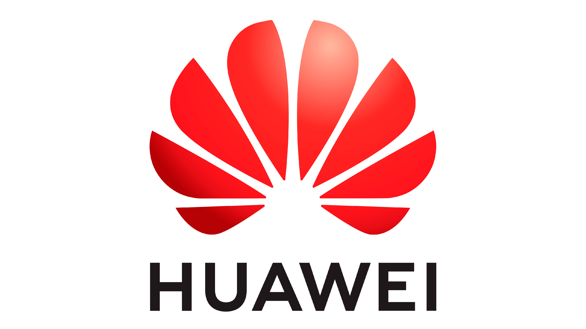

I'm Pongpisut Tupwong (Flook), a senior IT student at KMITL with a strong interest in DevOps, system administration, networking, and infrastructure. I learn best by doing — working with Linux, setting up virtual environments, and building things in my homelab just to see how systems actually run.
BS, Information Technology
Specialization: IT Infrastructure
System Engineer
Supported core IT infrastructure, including Active Directory and backup systems, alongside providing day-to-day IT support for staff. Maintained mail servers, configured Kubernetes monitoring, and set up an alerting system from Zabbix to Microsoft Teams. Additionally, utilized Power Automate (RPA) to streamline routine IT workflows.

Huawei Certified Cloud Developer Associate
Explores Huawei Cloud infrastructure and core services across Compute, Storage, Networking, Databases, and Security. The course also highlights advanced cloud architecture, focusing on distributed deployment, elastic scaling, and key technologies for cloud-native transformation.